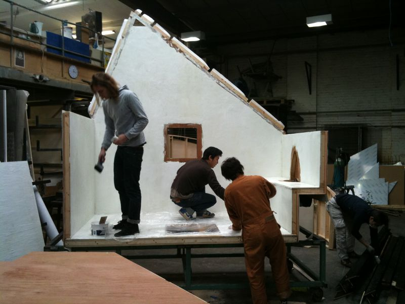
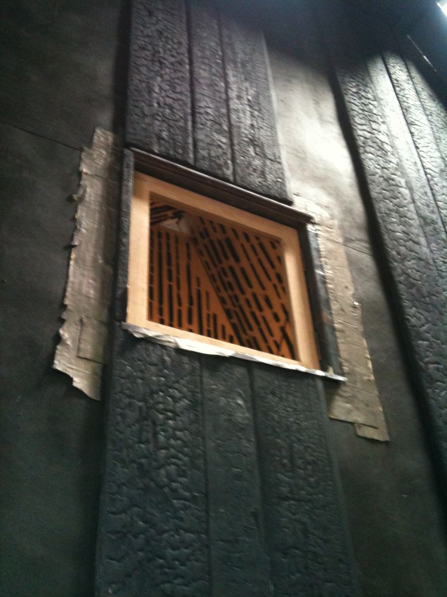
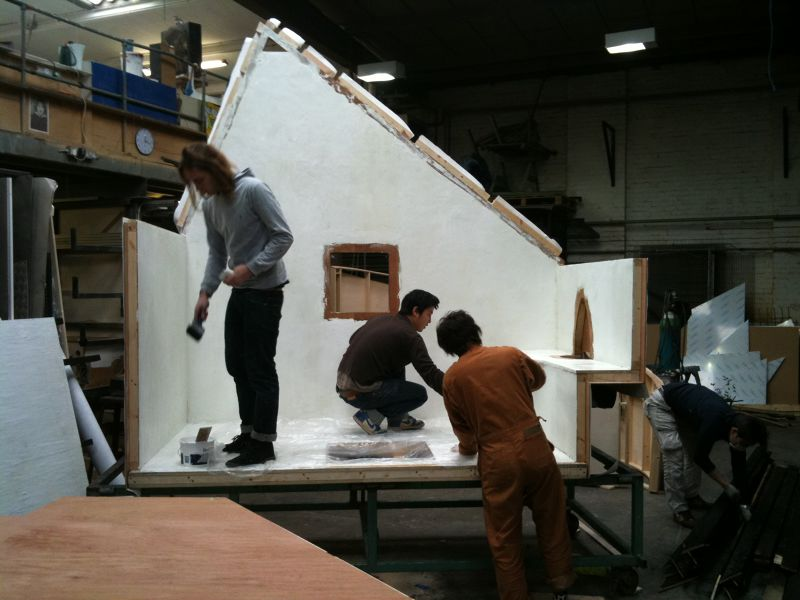
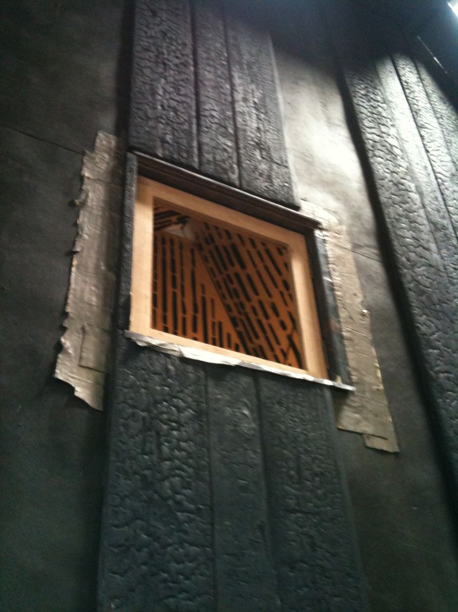

Producing the structural frame of the house and the window joinery alongside Professor Fujimori and detailing ammendments, then aiding his team of helpers alongside teaching a numerous number of RCA students who chose to come along During the installation there was a great deal of communication with the museum to install a challenging exhibition within in a very delicate space.
 


